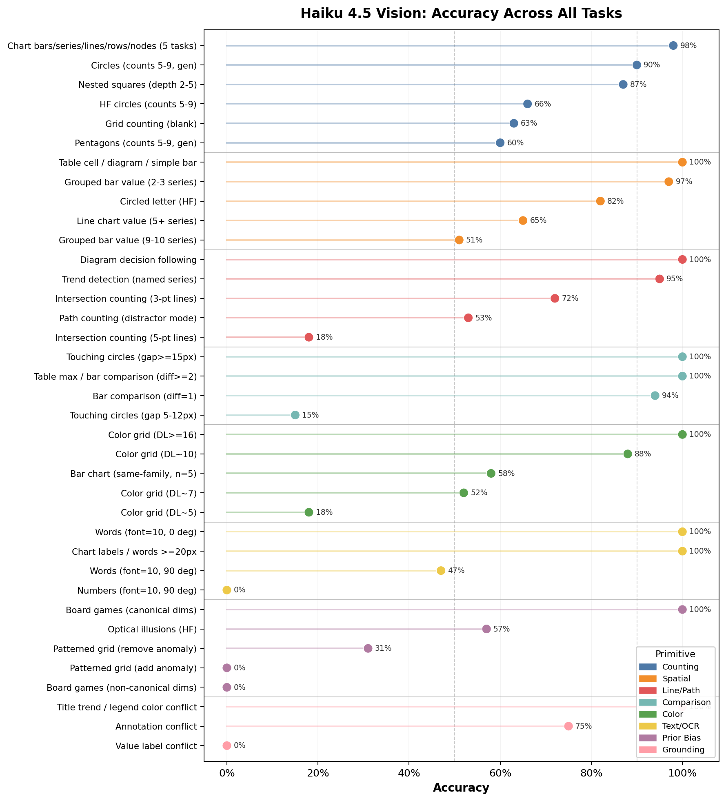

Per-Primitive Findings

Figure 1. Accuracy across all evaluated tasks, grouped by perceptual primitive. Dashed lines at 50% and 90%.
1. Counting / Enumeration
- Solved Structured counting (chart bars, series, lines, table rows, diagram nodes) hits 97-100% across 1,456 instances.
- Olympic rings memorization dominates the HF circle gap. When GT≠5, the model predicts “5” in 22% of HF cases vs 4% in monochrome generated images—accounting for 73% of the 24pp gen-vs-HF accuracy gap. This is a memorization failure, not a perceptual one.
- Shape complexity compounds overlap errors. At matched counts 5-9, pentagons (60%) are far harder than circles (90%). Complex edges create ambiguous intersection regions the model interprets as additional shapes.
- Text labels completely rescue grid counting. Blank grids score 49% (0% at 9+ rows); adding coordinate labels restores 100%. The model reads text rather than counting visual lines.
2. Spatial Localization
- Solved Table cell lookup (100%, n=480), diagram navigation (100%, n=240), simple bar charts (100%).
- Series confusion in dense charts. Both grouped bar and line value reading degrade from ~100% at 2-3 series to ~50% at 9-10. The model finds the correct x-position but attributes the value to the wrong series. Annotations make this worse for line charts (72% with labels vs 80% without)—the model grabs a nearby label from the wrong series.
- Circled letter errors are off by exactly one position 70% of the time. Lowercase characters flanked by uppercase neighbors are nearly invisible (0%); narrow characters like
l produce circles too thin for the model to localize.
3. Line / Path Following
- Solved Discrete labeled navigation (diagram arrows: 100%, n=450). Trend detection at 95% after prompt fix (specifying series by name).
- The model cannot selectively trace paths. In subway maps with mixed endpoints, 97% of errors are overcounts—the model counts all visible paths rather than tracing which ones connect the queried pair. Accuracy drops from 90% at 2 connections to 10% at 6.
- Intersection hallucination at gt=0. With 5-point polylines that don’t intersect, accuracy is 0%—the model always reports 2-3 crossings, interpreting visual proximity as intersection. Even with 3-point lines, the HF gt=0 false-positive rate is 64%.
4. Relative Comparison
- Solved Table max (100%, n=240), bar comparison at diff≥2 (100%, n=400)—regardless of distractor bar count (4-12).
- Bar comparison has a razor-sharp cliff at ~1% relative difference. At diff=1 on a 60-95 scale, accuracy drops to 94%; at diff=2 it’s 100%. No gradual degradation—the transition is binary.
- Proximity detection has a hard ~12-15px floor. Below 12px of visible gap, the model defaults to “touching” with 100% false-positive rate. Small circles (r=0.10) show a pathological regime: 0% for every gap up to 10px (100 consecutive wrong answers), then 100% at 20px.
5. Color Discrimination
- Solved Shade detection at ΔL≥16 (100%). Distinct-color bar charts (97%).
- Shade detection follows a clean sigmoid from 100% (ΔL≥16) to 18% (ΔL≈5). The model applies correct row-by-row scanning strategy but cannot perceive the difference—intact reasoning on insufficient percepts.
- Color family creates a 5× accuracy range. At ΔL≈7: oranges 70%, greens 10%. A single ΔL threshold is insufficient to characterize color discrimination. Dark shades are disproportionately confusable, consistent with Weber’s law.
6. Text Reading (OCR)
- Solved Text reading above 14px (words ≥96%, numbers ≥80% across all rotations). Chart labels 100% even at 7px.
- Lexical priors rescue words but not numbers. At font=10 + 90° rotation, words score 47% via plausible guessing (“Forecast”→“Forrest”) while numbers score 0%—each digit must be independently resolved with no vocabulary fallback.
- Rotation is harder than small size or low contrast alone. Unrotated font=10 text is 100% for both words and numbers; rotation to 90° causes the collapse. Vertical text is a qualitatively distinct failure mode.
7. Prior / Bias Override
- No ceiling tasks This is the only primitive where every task shows significant prior-induced errors.
- Board game bias is absolute. The model outputs 8 (chess) or 19 (Go) in every single response (400/400), with zero variance. The 60% overall accuracy is pure coincidence—correct only when the actual dimension matches the canonical one.
- Add-anomalies in patterned grids are invisible (0/126). Remove-anomalies are partially detectable (55% at 6×6) but degrade to 12% at 10×10 as surrounding pattern context strengthens the bias.
- Optical illusions affect the model like humans. Ebbinghaus is at exact chance (50%); the model’s visual representations encode the same biased percepts humans experience.
8. Visual-Textual Consistency
- Solved Title and legend conflicts (100%)—the model reads visual data and ignores contradictory high-level text.
- The model absolutely trusts numeric labels over visual evidence. When a bar is labeled with the wrong value, it reads the label 100% of the time (0% accuracy)—even when the prompt says “based on the bar heights.” Combined with grid counting results, this confirms the model’s primary chart-reading strategy is OCR, not visual perception.
- Text-reliance follows a proximity hierarchy: labels placed directly on elements (trusted absolutely) > spatial annotations like arrows (partially trusted when visual evidence is ambiguous) > semantic text like titles and legends (correctly ignored).